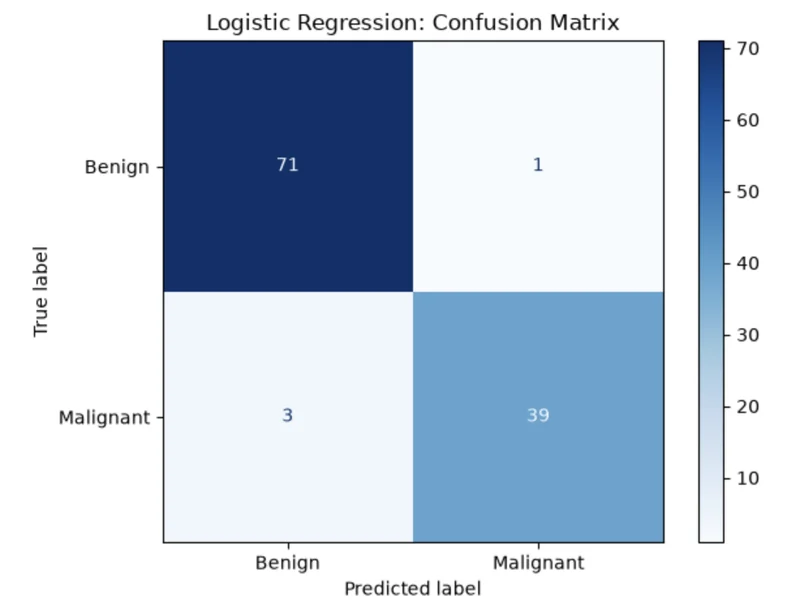
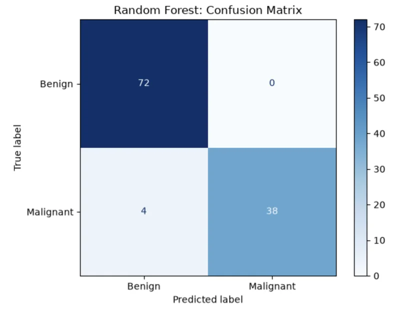
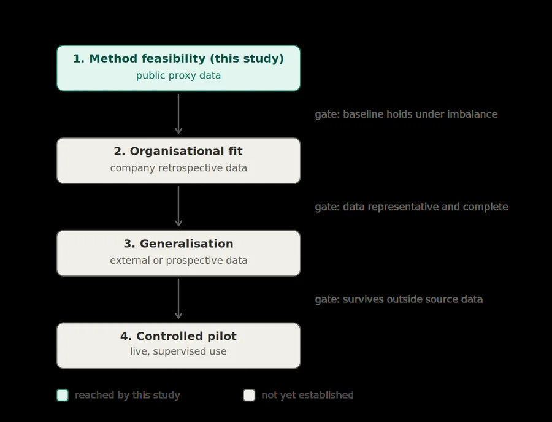

Unit 12 / Implementation report
Instantiating the Smallest Defensible Model
A clinical classification feasibility study. It tests the Unit 9 principle on the Wisconsin breast cancer data: whether Random Forest improves enough on logistic regression to justify being harder to explain.
Report details
- Module: Understanding Artificial Intelligence
- Assessment: Unit 12 AI Solution Implementation
- Dataset: UCI Breast Cancer Wisconsin (Diagnostic), https://doi.org/10.24432/C5DW2B
- Word limit: 2,000 words (+/-10%)
- Submission date: July 19, 2026
1. Business Context and Experimental Objective
The start-up is considering a predictive tool, and the board's problem is not enthusiasm. It is proof. Unit 9 established the “smallest defensible model” principle but left its experimental test open.
Experimental objective: determine whether Random Forest improves enough on an interpretable logistic regression baseline to justify its greater complexity for this proxy clinical classification task.
For this feasibility study, the company is treated as a developer of clinical decision support software. A clinician sees a case marked for attention, orders confirmatory work and decides. The tool never closes a case itself.
A false alarm prompts review; a missed malignancy removes that prompt. Because the rarer category carries greater cost, feasibility requires evidence the board can inspect, question and defend. Data and deployment readiness are not assumed.
2. Justifying the Dataset
Table 1 Wisconsin Diagnostic Breast Cancer dataset characteristics.
| Property | Value |
|---|---|
| Cases | 569 |
| Features | 30, computed from digitised fine-needle aspirate images |
| Target | Binary: benign or malignant |
| Class distribution | 357 benign (62.7%); 212 malignant (37.3%) |
| Source | Wolberg et al. (1993), UCI Machine Learning Repository |
The Wisconsin Diagnostic Breast Cancer dataset stands in for a clinical decision the start-up does not yet have data for, and its structure, summarised in Table 1, is what makes the substitution honest. The task instantiates the clinical classification setting discussed in Unit 9. More precisely, the model classifies a sampled breast mass from measurements extracted from a digitised fine-needle aspirate image. It is not intended for population screening.
Benign cases outnumber malignant ones by roughly 63 to 37, and the malignant class is both the minority and the one where a missed prediction is most costly. Accuracy can look strong while the rarer, costlier cases are missed.
The imbalance also limits what this study can conclude. Forty-two malignant cases in the hold-out set is a thin basis for a verdict. The feasibility claim therefore rests on cross-validation and fold-level variation, not a single split.
The dataset is suitable for testing the method but provides weak evidence for deployment. Before a pilot the organisation would need representative retrospective data with verified labels. The processed data contain no missing values or duplicate rows. The identifier was excluded, leaving thirty numeric predictors, so no further cleaning was required, as Table 2 confirms. The fitted model does not transfer simply because the evaluation method does.
Table 2 Data-quality checks on the Wisconsin dataset.
Rows, columns : (569, 30)
Missing values : 0
Duplicate rows : 0
Data types : float64
Class counts : malignant = 212 | benign = 3573. Approach to the Model
The task is supervised classification. Each training case carries a verified benign or malignant label, so the models learn a mapping from measurements to a known outcome rather than searching for structure without ground truth. An unsupervised approach would answer a different question, one about latent groupings, not the clinical question of whether a case belongs to the costly class.
The design decision came before any code: build the model management can question first, and make the more flexible model justify itself against that baseline. A tool that flags a patient as high risk will be asked to say why, and starting from the explainable candidate keeps that answer available from the first run rather than retrofitting it after a complex model has been chosen. The escalation model must deliver enough capability to pay for being harder to explain.
The pipeline follows four deliberate steps. Encoding was minimal, since the features are numeric and only the diagnosis label needed mapping, with malignant set as the positive class so every later metric points at the error that matters. The train-test split reserves 20 per cent of cases as a hold-out set, stratified so both classes keep their proportions, as Figure 1 shows, and that set stays untouched until final evaluation. Feature scaling standardises the thirty features for logistic regression, fitted on the training data alone so no information leaks. Random Forest receives unscaled data, since tree splits are indifferent to feature magnitude. Five stratified folds are used within the training data before the hold-out set delivers the final check. Danso et al. (2021) pair cross-validation with held-out testing under class imbalance, grounding the design in published clinical practice rather than classroom convention.
Evaluation was designed before the models were fitted. Foody (2023) argues that a single accuracy figure conceals the class-level behaviour that decides real-world usefulness, so the plan committed in advance to the confusion matrix, precision, recall, specificity, F1 and MCC.
The default 0.5 threshold is retained solely to support a controlled model comparison; clinical deployment would require separate threshold selection.
Figure 1 Case counts from the stratified 80/20 split. Both classes keep their proportions in the hold-out set.
Training cases: 455
Test cases : 114 (benign: 72 | malignant: 42 )4. Rationale for the Algorithms
The models test one trade-off, not raw power. Logistic regression is the baseline because its output is comparatively legible: each feature carries a coefficient, and management can inspect the direction and weight of the fitted relationships. That legibility has limits. Correlated derived measurements can make coefficients unstable, and a global coefficient does not by itself explain one patient-level prediction. It remains easier to audit than an ensemble of trees.
Random Forest is the escalation candidate. It aggregates many decision trees and can capture nonlinear interactions a linear model misses, but the same ensembling removes a single readable decision path. It gains flexibility and loses direct inspectability in the same move.
Both models run at their defaults. Tuning the challenger while leaving the baseline fixed would bias the comparison toward complexity, the outcome under test. Defaults may favour one algorithm, so the result compares these configurations, not each model’s best possible performance.
Khan et al. (2021) locate both models within the traditional machine-learning landscape, distinguishing that family from deep learning used for image-based diagnosis. Deep learning is out of scope for a proportional reason. The dataset is small and tabular, and a neural network brings capacity this data does not require. Rudin (2019) argues that in high-stakes settings an interpretable model should be preferred when it performs comparably to an opaque one. Comparably is the condition this experiment tests.
5. Analysis of Outputs
Both models reach 96.5 per cent accuracy, but Table 4 shows why that figure is insufficient. Foody (2023) warns that accuracy hides the distribution of errors.
The malignant class reveals the costlier error. The baseline logistic regression returned three false negatives; Random Forest returned four. It also raised one false alarm; the forest raised none. A false alarm requires additional clinical review and may prompt unnecessary confirmatory testing. A missed malignancy may delay further investigation; Canadian five-year net survival for female breast cancer falls from approximately 100 per cent at stage I to 23 per cent at stage IV (Ellison and Saint-Jacques, 2023).
With R as the relative cost of a missed malignancy, logistic regression costs less whenever R exceeds one (Table 3). The models tie only when both errors have equal cost.
Table 3 Cost-weighted error comparison. R is the cost of a false negative relative to a false positive.
| Cost ratio R (FN:FP) | LR total cost | RF total cost | Lower cost |
|---|---|---|---|
| 1 : 1 | 4 | 4 | tie |
| 5 : 1 | 16 | 20 | LR |
| 10 : 1 | 31 | 40 | LR |
| 20 : 1 | 61 | 80 | LR |
Table 4 Held-out test-set performance. Malignant is the positive class.
| Metric | Logistic regression | Random Forest |
|---|---|---|
| Accuracy | 0.965 | 0.965 |
| Precision | 0.975 | 1.000 |
| Recall | 0.929 | 0.905 |
| Specificity | 0.986 | 1.000 |
| F1 | 0.951 | 0.950 |
| MCC | 0.925 | 0.926 |
| False negatives | 3 | 4 |
| False positives | 1 | 0 |
MCC differs by roughly one thousandth, so neither model dominates. Foody (2023) shows that MCC can be inflated by correlated errors in an imperfect reference standard; its value depends on label quality. The Wisconsin diagnoses are histologically confirmed; the start-up’s eventual labels may not be. The escalation model shows no capability gain to justify its opacity.
An exact two-sided McNemar test compares the classifiers' paired errors on the same cases (Dietterich, 1998). It returns p = 1.000 (Appendix A7.6): the six discordant cases split 3/3, providing no evidence of a performance difference. This does not prove equivalence; it shows only that so small a test set cannot reveal one.
With only 42 malignant test cases, another split could reverse the ranking. Malignant recall averages 0.953 for logistic regression against 0.935 for the forest, although the forest leads on one of five folds. A benign-only DummyClassifier reaches 63 per cent accuracy but detects no malignancies. The defensible finding is narrower than a winner: this test shows no advantage sufficient to justify escalation. Separate bootstrap 95 per cent recall intervals are wide (logistic regression [0.841, 1.000]; Random Forest [0.806, 0.979]) and do not directly test the difference between models.

Text description of Figure 2
Rows are the true label and columns the predicted label. True benign: 71 predicted benign, 1 predicted malignant. True malignant: 3 predicted benign, 39 predicted malignant.

Text description of Figure 3
Rows are the true label and columns the predicted label. True benign: 72 predicted benign, 0 predicted malignant. True malignant: 4 predicted benign, 38 predicted malignant.
Table 5 Five-fold cross-validation on the training data, per-fold ranking, the naive benchmark.
LR recall: mean 0.953 sd 0.040
RF recall: mean 0.935 sd 0.029
LR per fold: 0.882, 0.971, 1.000, 0.941, 0.971
RF per fold: 0.941, 0.971, 0.882, 0.941, 0.941
Dummy accuracy : 0.632
Dummy malignant recall: 0.000Radius, perimeter and area measures are related by construction, as Table 6 shows. All thirty predictors are retained for this feasibility comparison. An exploratory threshold sensitivity analysis shows that lowering the baseline threshold from 0.5 to 0.3 cuts false negatives from three to one without adding a false alarm (Appendix B, Table B1). The operating point moves the costly error more than the choice between these two algorithms does. Regularisation and reduced feature groups remain for later.
Table 6 Strongest feature correlations.
r = 0.998 mean radius <-> mean perimeter
r = 0.994 worst radius <-> worst perimeter
r = 0.987 mean radius <-> mean area
r = 0.987 mean perimeter <-> mean area
r = 0.984 worst radius <-> worst area
Pairs with |r| >= 0.90: 216. Transfer to the Unit 9 Problem
Unit 9 set out the principle for clinical decision support but left the dataset, algorithms and testing method open. This experiment tests it. The evaluation method transfers; the fitted model does not.
The method starts with an interpretable baseline. A complex model must perform well enough to justify being harder to understand. The evaluation and validation process can transfer because it handles class imbalance and assesses each class separately. The trained model cannot. Danso et al. (2021) adapted a source model to a new cohort and improved sensitivity by 19.1 percentage points over its local baseline. The Wisconsin model learned dataset-specific patterns, so presenting it as company-ready would create false readiness.
The company’s first case follows the same process. It gathers patient records with confirmed outcomes and labels the more costly outcome as positive. Logistic regression runs first because managers can inspect how every input affects its prediction. Random Forest is tested the same way and judged by how many costly cases it catches and the cost of its errors, not overall accuracy. One rule decides. If the more complex model only matches the baseline, as it did here, the clearer model is used. If it catches more costly cases and the confidence interval supports that improvement, its complexity is justified. The evidence decides. The board does not guess.
Strong validation scores do not guarantee clinical impact, which turns on transparency, adaptability and evidence beyond retrospective validation (Aristidou, Jena and Topol, 2022). Figure 4 translates this deployment gap into four readiness stages, and public proxy data reach only the first. No stage can be skipped by scoring well on the one before.

Text description of Figure 4
Four stages in order. Stage 1, method feasibility, uses public proxy data and is the only stage reached by this study. Stage 2, organisational fit, uses company retrospective data. Stage 3, generalisation, uses external or prospective data. Stage 4 is a controlled pilot with live, supervised use. The gate from stage 1 to 2 is that the baseline holds under imbalance. The gate from 2 to 3 is that the data are representative and complete. The gate from 3 to 4 is that the model survives outside the source data. Stages 2 to 4 are marked not yet established.
The methods this feasibility stage does not run are not oversights. Each belongs to a later readiness stage, and Table 7 assigns them.
Table 7 Validation methods by readiness stage.
| Method not yet run | Readiness stage | Why deferred |
|---|---|---|
| Repeated nested cross-validation, formal hyperparameter search | Stage 1 (method hardening) | Only needed once tuning is in scope; defaults are deliberate here |
| Calibration assessment, decision-curve analysis, formal cost matrix at scale | Stage 2 (organisational fit) | Require the company's own costs and prevalence, not the proxy dataset's |
| Subgroup validation, external validation | Stages 2–3 (fit and generalisation) | Impossible on Wisconsin: no demographics, single source |
These safeguards are ethical as much as operational. The World Health Organization (2021) places non-maleficence, transparency and accountability among its principles for clinical AI. A tool that can miss a malignant case, or cannot justify why it flagged a patient, engages duties no accuracy figure discharges.
Fairness is the clearest thing that breaks in transfer. The Wisconsin data carry no demographic information, so nothing here shows whether performance holds across age, ethnicity or comorbidity. Obermeyer et al. (2019) found that a widely deployed health algorithm underserved Black patients because it predicted healthcare cost rather than illness. Although this study uses a different kind of proxy, the case shows why proxy choice must be examined before transfer. A model that missed malignancies unevenly across groups would be indefensible at any accuracy, and data without demographic information cannot reveal it. Subgroup evaluation belongs to the second readiness stage, not the fourth.
The strongest objection is that interpretable models can underperform complex ones in healthcare. Ennab and Mcheick (2024) report that tension, and the baseline-first discipline must not become a rule against complexity. If a challenger produces a stable, meaningful gain that a simpler model cannot match, escalation is justified. This experiment cannot refute that possibility. It shows only that the sacrifice used to justify escalation cannot be assumed; it must be demonstrated case by case.
7. Conclusion
This experiment tested an evaluation process. Both models achieved the same accuracy, but logistic regression missed one fewer malignant case. Under this proxy dataset and default comparison, Random Forest showed no gain sufficient to justify its greater complexity. The pipeline still met the feasibility objective by producing evidence the board can inspect and defend.
This makes the Unit 9 principle actionable: begin with an interpretable model, adopt greater complexity only when it produces a meaningful gain, and judge models by the costliest error.
A small proxy dataset cannot establish performance on hospital data, clinician acceptance, subgroup fairness or stability over time.
The results do not establish deployment readiness. Management should therefore retain logistic regression as the provisional baseline and fund further testing on representative organisational data and patient subgroups. The model advanced should be the one the business can understand, justify and support with evidence.
References
- Anthropic (2026) Claude (Opus 4.8) [Large language model]. Available at: https://claude.ai (Accessed: 13 July 2026).
- Aristidou, A., Jena, R. and Topol, E.J. (2022) ‘Bridging the chasm between AI and clinical implementation’, The Lancet, 399(10325), p. 620. doi: 10.1016/S0140-6736(22)00235-5.
- Danso, S.O., Zeng, Z., Muniz-Terrera, G. and Ritchie, C.W. (2021) ‘Developing an explainable machine learning-based personalised dementia risk prediction model: a transfer learning approach with ensemble learning algorithms’, Frontiers in Big Data, 4, 613047. doi: 10.3389/fdata.2021.613047.
- Dietterich, T.G. (1998) 'Approximate statistical tests for comparing supervised classification learning algorithms', Neural Computation, 10(7), pp. 1895-1923. doi: 10.1162/089976698300017197.
- Ellison, L.F. and Saint-Jacques, N. (2023) ‘Five-year cancer survival by stage at diagnosis in Canada’, Health Reports, 34(1), pp. 3–15. doi: 10.25318/82-003-x202300100001-eng.
- Ennab, M. and Mcheick, H. (2024) ‘Enhancing interpretability and accuracy of AI models in healthcare: a comprehensive review on challenges and future directions’, Frontiers in Robotics and AI, 11, 1444763. doi: 10.3389/frobt.2024.1444763.
- Foody, G.M. (2023) ‘Challenges in the real world use of classification accuracy metrics: from recall and precision to the Matthews correlation coefficient’, PLOS ONE, 18(10), e0291908. doi: 10.1371/journal.pone.0291908.
- Khan, S., Sajjad, M., Hussain, T., Ullah, A. and Imran, A.S. (2021) ‘A review on traditional machine learning and deep learning models for WBCs classification in blood smear images’, IEEE Access, 9, pp. 10657-10673. doi: 10.1109/ACCESS.2020.3048172.
- Obermeyer, Z., Powers, B., Vogeli, C. and Mullainathan, S. (2019) ‘Dissecting racial bias in an algorithm used to manage the health of populations’, Science, 366(6464), pp. 447-453. doi: 10.1126/science.aax2342.
- Rudin, C. (2019) ‘Stop explaining black box machine learning models for high stakes decisions and use interpretable models instead’, Nature Machine Intelligence, 1(5), pp. 206-215. doi: 10.1038/s42256-019-0048-x.
- Wolberg, W., Mangasarian, O., Street, N. and Street, W. (1993) Breast Cancer Wisconsin (Diagnostic) [Dataset]. UCI Machine Learning Repository. Available at: https://doi.org/10.24432/C5DW2B (Accessed: 6 July 2026).
- World Health Organization (2021) Ethics and governance of artificial intelligence for health: WHO guidance. Geneva: World Health Organization. Available at: https://www.who.int/publications/i/item/9789240029200 (Accessed: 12 July 2026).
Appendix A. Supplementary Notebook Evidence
The complete executable notebook remains a separate submission.
Table A1 Notebook parts, the evidence each holds and the report sections it supports.
| Notebook part | Evidence | Report link |
|---|---|---|
| A1 | Environment, imports, versions and seed | Section 3 |
| A2 | Data loading, schema and target mapping | Section 2 |
| A3 | Quality checks and class distribution | Section 2 |
| A4 | Stratified split and leakage-safe preprocessing | Section 3 |
| A5 | Logistic regression training and validation | Sections 4-5 |
| A6 | Random Forest training and validation | Sections 4-5 |
| A7 | Dummy baseline, metrics, confusion matrices, recall CI, McNemar test, cost analysis | Section 5 |
| A8 | Correlation and threshold analysis | Sections 5-6 |
Appendix B. Additional Model Outputs
Table B1 Threshold sensitivity for logistic regression on the held-out test set.
threshold 0.30 -> false negatives 1, false positives 1
threshold 0.40 -> false negatives 2, false positives 1
threshold 0.50 -> false negatives 3, false positives 1Appendix C. AI-Use and Academic Integrity Declaration
Generative AI (Anthropic, 2026) was used in the planning and preparation of this report, and its use is declared here in full. The tool was used as an educational, technical, and visual aid across four key areas: brainstorming initial project topics based on the assignment parameters (leading to the selection of the UCI Breast Cancer dataset), providing foundational guidance on navigating the Jupyter notebook environment, assisting with report structuring based on my own analytical framework, and generating the project workflow diagram (Figure 4) based on my provided information and logic.
Its operational role within the codebase was strictly bounded to research support and reviewing my self-authored drafts. The AI was used exclusively to flag syntax mistakes or logical oversights when prompted, suggesting corrections where my initial attempts failed; it did not author the final solution.
Verification was entirely my own. The submitted notebook is the one I wrote. All numerical results, model evaluations, threshold adjustments, and figures were generated directly from this self-authored pipeline and verified against the raw dataset. The core analysis, interpretation of the machine learning performance metrics, the underlying framework of the workflow diagram, strategic business recommendations to senior management, and the final narrative of this report are completely my own work and responsibility.
Feedback
Your modelling pipeline is implemented rigorously, with correct stratification, leakage-safe preprocessing, cross-validation, cost-weighted error analysis and appropriate statistical testing.
Your report is very clear, well-organised and professionally presented.
Points for development
- Criticality needs deeper engagement with academic debates and methodological alternatives
- Literature use is selective and often descriptive. Dataset justification could better address representativeness, bias and clinical transfer limitations
- Limited exploration of model tuning or alternative algorithms